Ogni pulsante della barra di PdfForAll, con la sua guida passo passo.

Menu
Apri le impostazioni, cambia lingua o tema e consulta le informazioni dell’app.
Guida completa › — Menu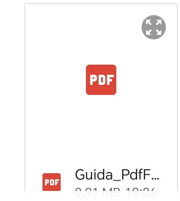
Apri
Scegli un documento dal dispositivo o riapri un progetto compatibile.
Guida completa › — Apri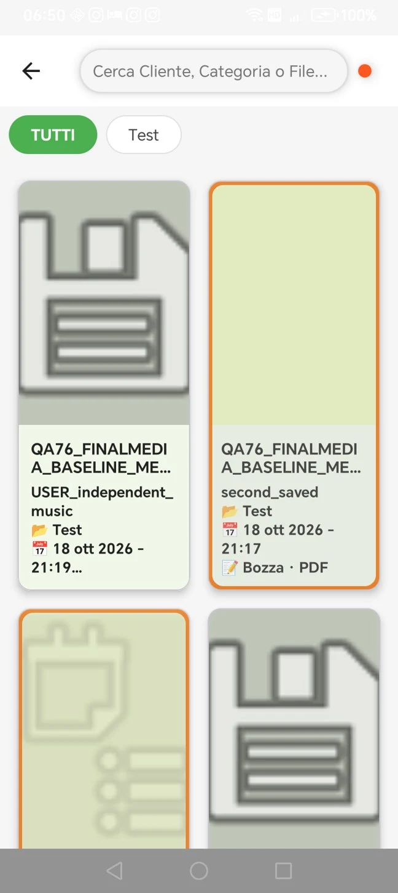
Archivio
Ritrova documenti, bozze, cartelle e backup.
Guida completa › — Archivio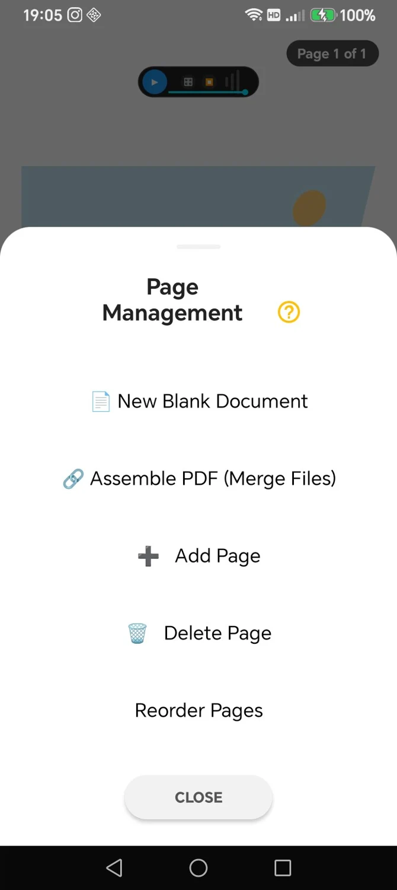
Gestione PDF
Crea un PDF, unisci documenti e aggiungi, elimina o riordina le pagine.
Guida completa › — Gestione PDF
Salva
Conserva una bozza modificabile o esporta un PDF definitivo.
Guida completa › — SalvaInvia
Condividi il PDF mediante le app disponibili sul dispositivo.
Guida completa › — Invia
Scanner
Fotografa fogli e riuniscili in un PDF.
Guida completa › — Scanner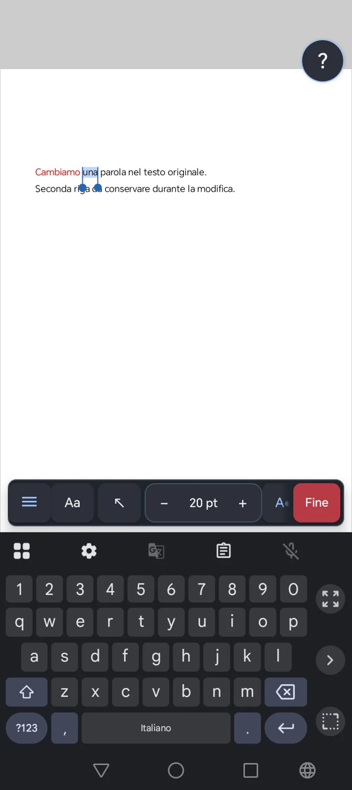
PDF Editor
Sostituisci o estrai testo e modifica le foto già presenti nel PDF.
Guida completa › — PDF Editor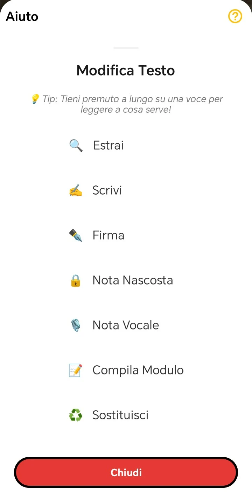
Annotazioni
Scrivi, firma, compila moduli e aggiungi note nascoste o vocali.
Guida completa › — Annotazioni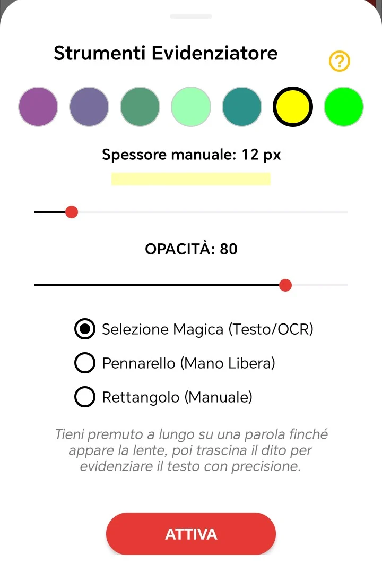
Evidenzia
Metti in risalto il testo scegliendo modalità, colore e opacità.
Guida completa › — Evidenzia
Sottolinea
Sottolinea il testo con un tratto continuo o tratteggiato, oppure barralo.
Guida completa › — Sottolinea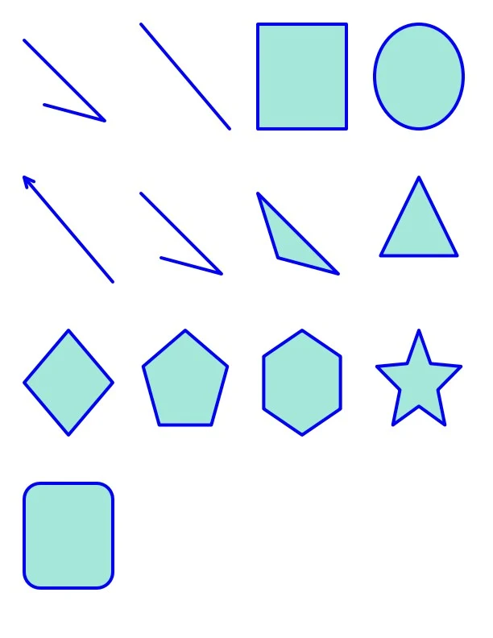
Disegna
Disegna a mano libera o aggiungi linee, frecce e forme.
Guida completa › — Disegna
Foto
Inserisci una foto e regolane dimensioni, forma e posizione nella pagina.
Guida completa › — Foto
Video
Posiziona un video nel PDF e personalizza forma, cornice e controlli.
Guida completa › — Video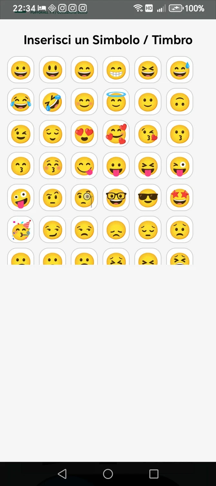
Simboli
Aggiungi simboli ed emoji e disponili nella pagina.
Guida completa › — Simboli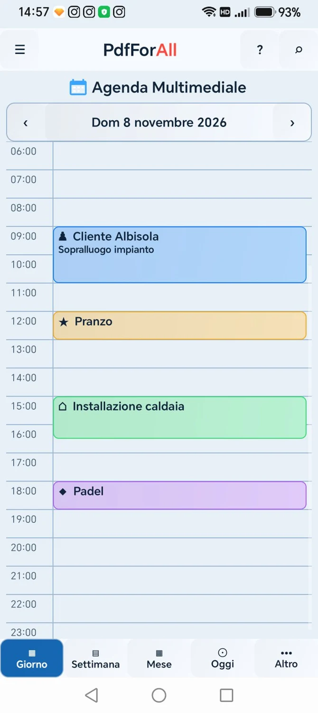
Agenda
Organizza appuntamenti, allegati e promemoria nel calendario multimediale.
Guida completa › — AgendaMail
Apri gli strumenti per consultare le caselle compatibili e preparare messaggi con allegati.
Guida completa › — MailCrea diario
Scegli un diario e costruisci le tue pagine con testi e contenuti multimediali.
Guida completa › — Crea diario
Audio
Apri le funzioni per MP3, registrazioni vocali, lettori nella pagina e radio.
Guida completa › — Audio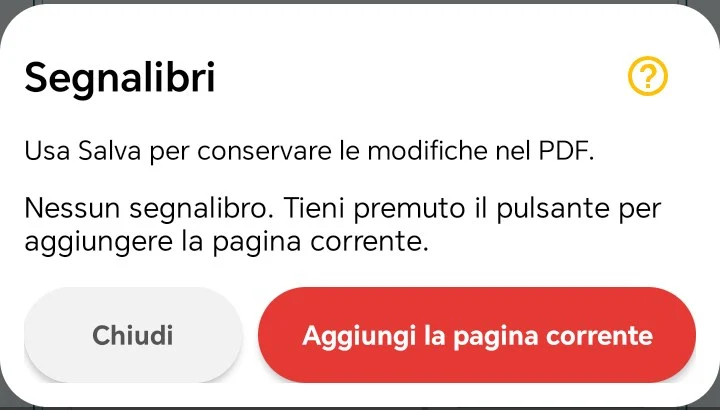
Segnalibri
Segna le pagine importanti e torna al punto di lettura.
Guida completa › — Segnalibri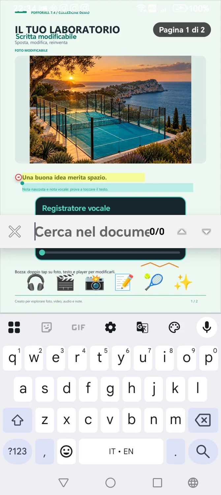
Cerca
Trova una parola o un’espressione nel documento.
Guida completa › — Cerca
Voce
Ascolta la pagina corrente oppure prosegui la lettura fino alla fine del PDF.
Guida completa › — VoceAiuto
Apri la guida dall’app o consulta la procedura dello strumento in uso.
Guida completa › — Aiuto
Elimina
Seleziona gli elementi da rimuovere e usa Annulla se serve.
Guida completa › — Elimina